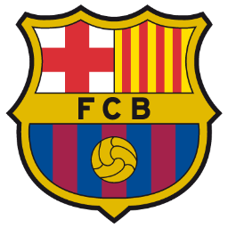

F.C. Barcelona (2004 - 2021)
- Máximo goleador de la historia del club
- Jugador extranjero con más partidos en la historia del club
- Máximo goleador de la historia de La Liga
- Máximo asistente de la historia de La Liga
- Máximo goleador en una liga (50 goles en la temporada 2011-2012)
- Campeón de La Liga (x10)
- Campeón de Copa del Rey (x7)
- Campeón de Copa Cataluña (x4)
- Campeón de Mundial de Clubes de la FIFA (x3)
- Campeón de Supercopa de España (x8)
- Campeón de Liga de Campeones de la UEFA (x4)
- Campeón de Supercopa de Europa (x3)
- Campeón de Supercopa de Cataluña (x2)